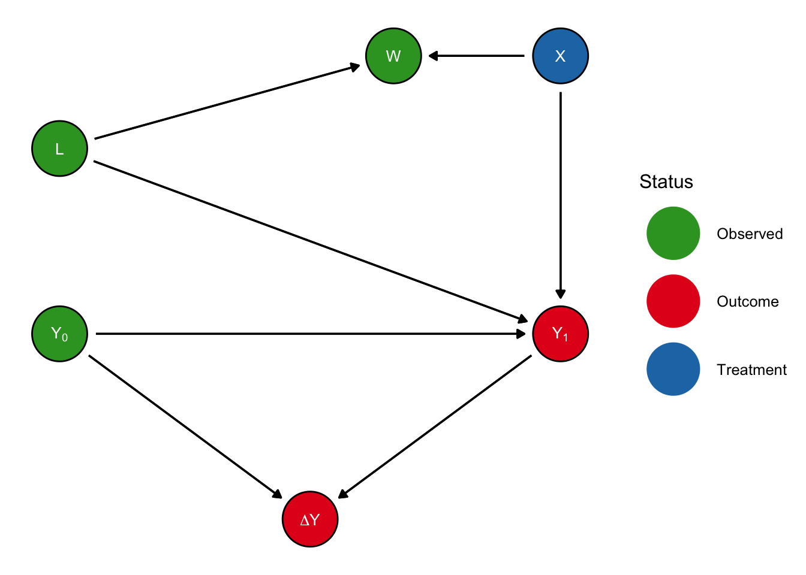
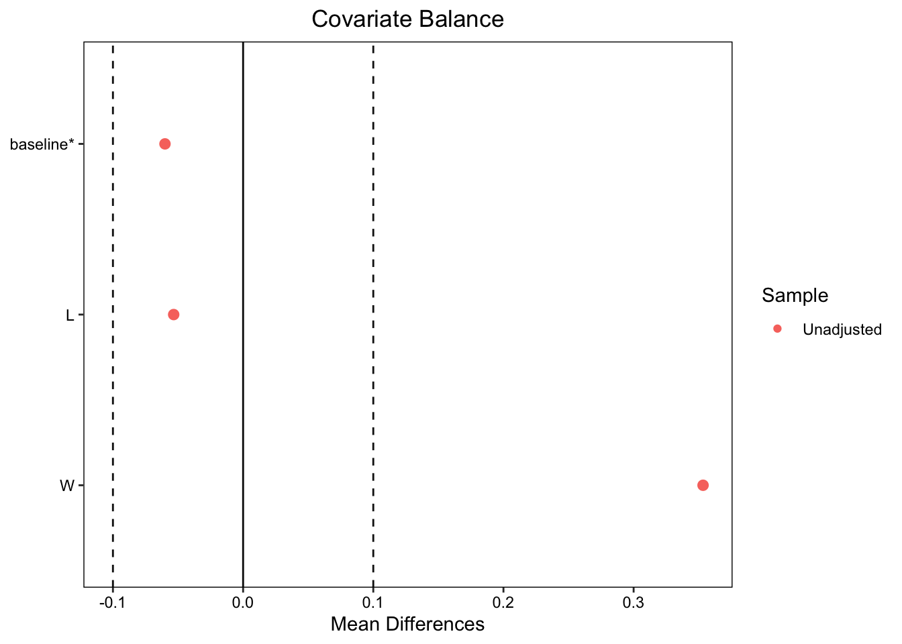
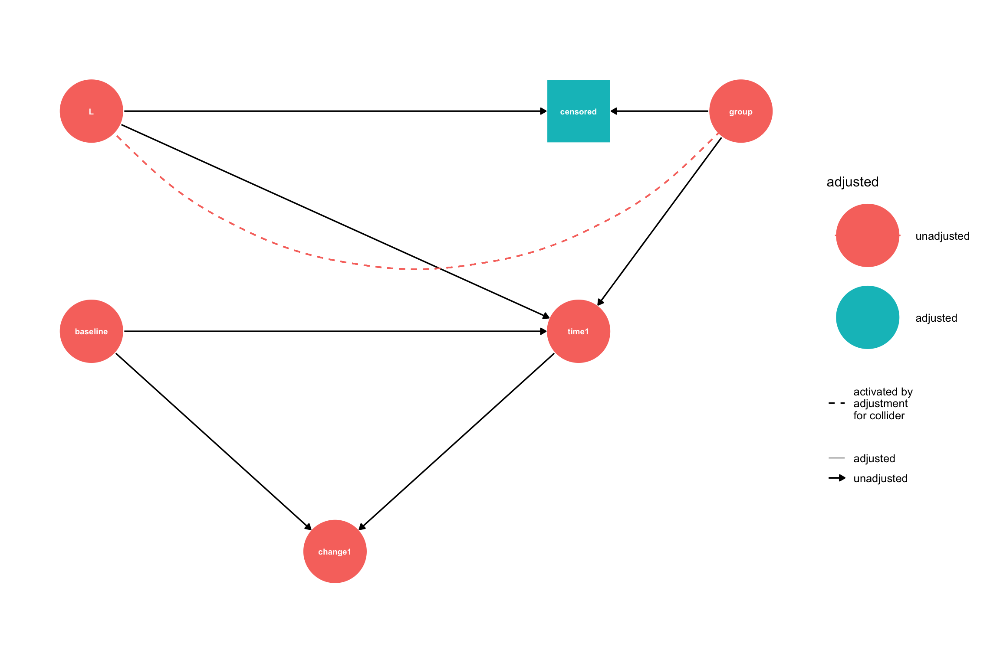
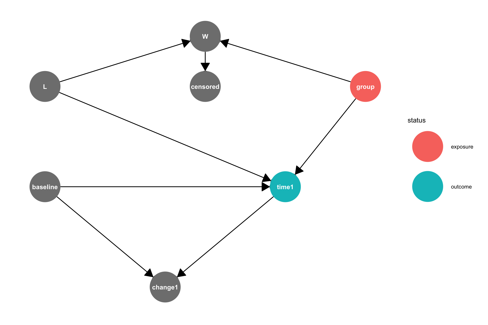
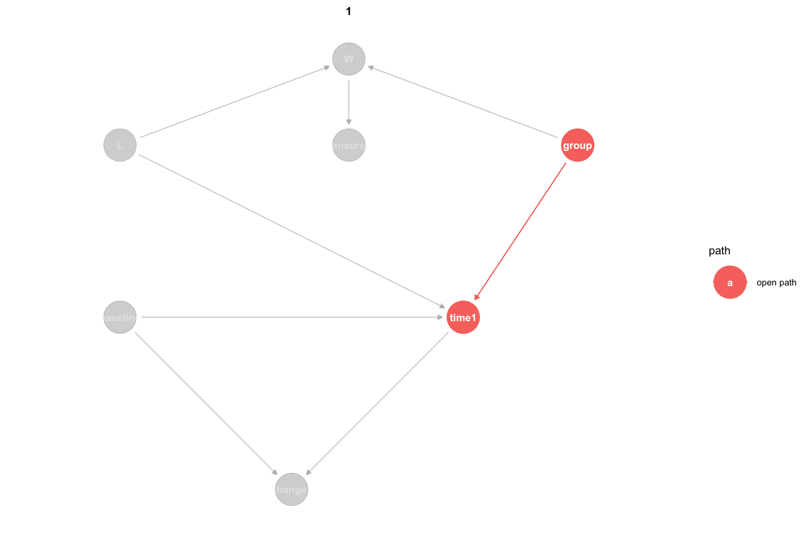
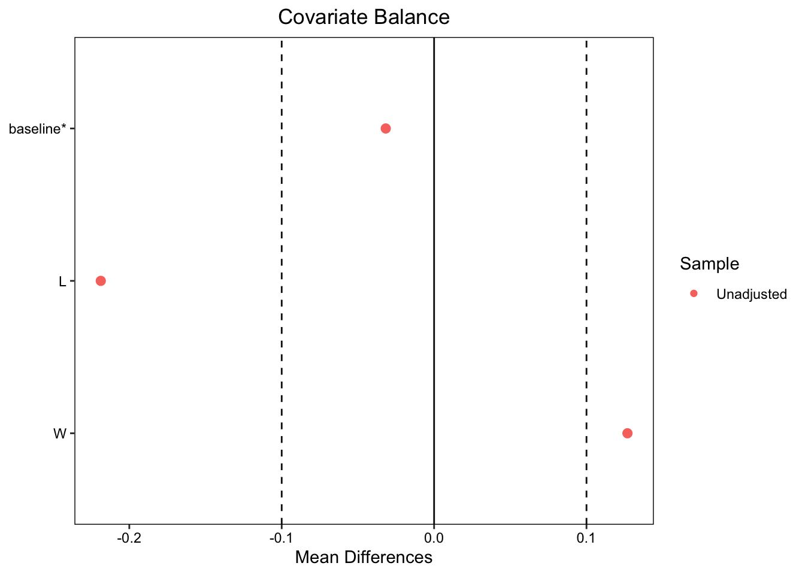

#remotes::install_github("jtextor/dagitty/r")library(dagitty)library(ggdag)library(tidyverse)library(DT)library(gt)library(gtsummary)library(knitr)library(kableExtra)# usethis::use_github_pages("main") # Tell github to publish on github pages
Construction Zone
This is a work in progress and subject to change nearly daily. At this stage there are numerous inconsistencies as I work to create a single simulated dataset that demonstrates the desired issues at hand while analyzing change from baseline.
The goal of this notebook is to demonstrate how to estimate treatment effects of a dichotomous (binary) treatment on change from a continuous baseline measure in both experimental and observational designs. For example, suppose we want to estimate the effect of a new drug vs. placebo for reducing blood pressure after 6 months of use. Here, the blood pressure at treatment assignment is the baseline value, which we will denote as \(Y_0\), and blood pressure measured 6 months after treatment assignment is the follow-up measure, denoted \(Y_1\).
There are two common approaches to defining the outcome: (1) Compare the difference in the follow-up measures between the experimental and control group; or (2) Compare the difference in change scores between the two groups, where a change score, \(\Delta Y\), for an individual is the difference between the follow-up blood pressure \(Y_1\) and the baseline blood pressure \(Y_0\): \(\Delta Y = Y_1 - Y_0\)
Technical Note
There is considerable controversy over whether and when to use change scores vs follow-up measures as the effect estimate. See Tennant et al. (2021) and Glymour (2022) for a discussion of some of the issues. A number of papers, going back decades, discuss this topic. However, my understanding is that much of the controversy stems from the fact that few researchers use proper causal thinking and methods when designing their studies and estimating effects. The controversy is further amplified because there are many different dimensions to the problem with different researchers focusing on a different subset of those dimensions. Finally, many older papers were written without the benefit of modern causal inference theory and methods, so they lack the theoretical and mathematical foundation to properly address the issues.
If you read Tennant et al. (2021), you will see that despite the title warning that “change scores do not estimate causal effects” he later in the paper contradicts the title by correctly stating that change scores do indeed estimate causal effects when the baseline measure is a competing exposure of the follow-up measure, meaning that the baseline measure does not cause the treatment, nor is caused by the treatment. This is true of the example that I use throughout this paper. In his paper, he uses other examples in which the “baseline measure” is partly caused by the treatment or is a cause of treatment. In my opinion, such measures are not truly baseline measures. In addition, if you suspect this to be true, then the resulting causal DAG will directly guide how you select the effect to estimate and what is needed to do the estimation.
In this notebook I use the notation from the potential outcomes approach to causal inference to refer to the variables of interest. Don’t worry, I will repeat these definitions as they are used below.
Variable
Description
\(Y_0\)
Baseline measure (continuous)
\(Y_1\)
Follow-up measure (continuous)
\(X\)
Treatment (binary). \(x=1\) when treated, otherwise \(x = 0\)
\(\Delta Y\)
Change score. \(\Delta Y = Y_1 - Y_0\)
\(Y_1^x, \Delta Y^x\)
Follow-up measure and change score when treated (\(x = 1\))
\(Y_1^{x'}, \Delta Y^{x'}\)
Follow-up measure and change score when untreated ($x = 0$)
We will use five increasingly complex data generating models to explore this problem:
A model where the potential outcomes (the outcome measure under both treatment and control) are known for all participants.
A Randomized Controlled Trial (RCT) with no loss to follow-up.
An RCT with differential loss to follow-up.
An observational study with treatment assignment confounding
An observational study with treatment assignment confounding and loss to follow-up.
We will also consider four causal estimands1 based on the two approaches discussed above:
1 A causal estimand is the value we wish to estimate, such as the difference in follow-up measures between the experimental and the control group.
The average treatment effect (ATE) on the outcome at follow-up, expressed as the difference between the follow-up measure under treatment vs. control: \[\mathrm{E}(Y_1^x) - \mathrm{E}(Y_1^{x'}) \tag{1}\]
Here, \(Y_1\) is the follow-up outcome, \(x\) is the treatment, and \(x'\) is the control. \(Y_1^x\) represents the value that a participant would have if treated, whereas \(Y_1^{x'}\) represents the value that a participant would have if untreated. Hence this effect estimate is the difference between the expected outcome if all patients in the study were treated and the expected outcome if all patients were not treated.
The average treatment effect on the change score \(\Delta Y\):
\[E(\Delta Y^x) - E(\Delta Y^{x'})\]
This is the difference between the expected value of the change score if all patients had been treated \(\Delta Y_1^x\) and the expected value if all patients had been untreated \(\Delta Y_1^{x'}\). We can expand this equation to: \[
\mathrm{E}(Y_1^x - Y_0^x) - \mathrm{E}(Y_1^{x'} - Y_0^{x'})
\tag{2}\]
The conditional treatment effect on the follow-up outcome, conditioned on the observed baseline value \(Y_0\): \[
E[Y_1^x - Y_1^{x'} | Y_0 = y_0]
\tag{3}\]
This estimand represents the effect of treatment on the part of the follow-up outcome that hasn’t already been determined by the baseline value.
The conditional treatment effect on the change score, conditioned on the observed baseline value \(Y_0\): \[
E[\Delta Y^x - \Delta Y^{x'}) | Y_0 = y_0]
\tag{4}\]
This estimand represents the effect of treatment on the part of the change score that hasn’t already been determined by the baseline value. Note that because the change score includes the baseline value \(Y_0\), this estimand is equivalent to Equation 3.
Estimands vs Estimators
A causal estimand expresses the value that we wish to estimate. A statistical estimator is how we estimate that value. For any given estimand there are often multiple possible statistical estimators, each with possible strengths and weaknesses. For example, with an RCT we can estimate ATE by subtracting the differences in the means of the outcome variable across the groups or by using linear regression or a number of other approaches.
There is considerable controversy in the literature over whether and when to use the difference in outcome at follow-up Equation 1 vs the difference in the change score Equation 2 as well as whether to adjust for baseline values. We will explore some of these issues below.
Model 1: Additive Treatment Effect, Potential Outcomes Known
The Causal DAG for the first and simplest model looks like this:
Code
#, fig.width = 12, fig.height = 8# Define coordinates for a more complex DAGcoords <-list(x =c(Y0 =0, L =0, W =2, X =3, Y1 =3, DY =1.5)*.5,y =c(Y0 =1, L =2, W =2.5, X =2.5, Y1 =1, DY =0)*.5)# Create the DAG using dagifydagMod1 <-dagify( Y1 ~ Y0 + X + L, W ~ L + X, # Side effect influenced by both L and treatment DY ~ Y0 + Y1,exposure ="X",outcome ="Y1",coords = coords)# Convert the dagitty graph to a ggdag group for prettier printingtidy_dagMod1 <-tidy_dagitty(dagMod1) # Add labels and statustidy_dagMod1$data$math_label <-with(tidy_dagMod1$data, case_when( name =="X"~"X", name =="L"~"L", name =="W"~"W", name =="Y0"~"Y[0]", name =="Y1"~"Y[1]", name =="DY"~"Delta*Y"))tidy_dagMod1$data$status <-with(tidy_dagMod1$data, case_when( name =="Y1"~"Outcome", name =="DY"~"Outcome", name =="X"~"Treatment", name %in%c("Y0", "L", "W") ~"Observed"))ggdag(tidy_dagMod1) +geom_dag_point(aes(color = status), size =15) +geom_dag_text(aes(label = math_label), parse =TRUE, size =3.5, color ="white") +geom_dag_edges(aes(xend = xend, yend = yend)) +scale_color_manual(name ="Status",values =c("Outcome"="#E31A1C","Treatment"="#1F78B4", "Observed"="#33A02C"# "Unobserved" = "#FF7F00" ) ) +theme_dag_blank()

Causal DAG for Model 1 where group is the treatment variable and either time1 or change1 is the outcome.
The DAG uses common sense names instead of the typical variables used in potential outcomes:
\(Y_0\): Baseline value
\(Y_1\): Follow-up value
\(\Delta Y\): Change score
\(X\): Treatment indicator where \(X=0\) is control and \(X=1\) is treatment
L: A binary prognostic factor that increases time1 by 10 when \(L = 1\). Depending on what we wish to demonstrate we may treat L as measured or unmeasured.
W: A (binary) side-effect resulting from a combination of L and the treatment, group. W is more likely when L=1 and when treated group = treated. We will use W later to model loss to follow-up.
Now let’s simulate potential outcomes for the causal DAG shown above. In this simulation, the causal effect of treatment on time1 is 10, meaning that treated patients will see their baseline score increase by 10 plus a random amount of normally distributed noise with mean 0 and standard deviation of 3 (\(\mu = 0\), \(\sigma = 3\)), whereas control will see only the random change. The simulation calculates the potential outcomes time1_x0 and time1_x1 for all participants, where x1 is the outcome under treatment, and x0 under control. Likewise, the simulation also calculates potential outcomes of the change score: change1_x0, and change1_x1.
Finally, we use the potential outcomes for each participant to calculate the individual treatment effect for both time1 and change1. An individual treatment effect for a participant is the difference between that person’s outcome under treatment and outcome under control.
# Set seed for reproducibilityset.seed(124)# 300 participantsn <-300# Generate baseline scoresbaseline <-rnorm(n, mean =50, sd =10)# Set additive effectadditive_effect <-10# improvement of +10 to time1 for treatment group# Generate a prognostic factor (L) - binary (0: favorable, 1: unfavorable)L <- prognostic_factor <-rbinom(n, 1, 0.4)baseline_outcome_effect <-10# Effect of prognostic factor on outcome: time1# Calculate potential outcomes for time1 for all participants# time1 under control adds a small amount of random noise, so on average there is no effect of control on the baseline valuetime1_x0 <- baseline + baseline_outcome_effect*L +rnorm(n, mean =0, sd =3)# time1 under treatment is on average 10 units higher than baselinetime1_x1 <- baseline + additive_effect + baseline_outcome_effect*L +rnorm(n, mean =0, sd =3)# Calculate potential outcomes for the change scorechange1_x0 <- time1_x0 - baselinechange1_x1 <- time1_x1 - baseline# Calculate individual treatment effects (ITE) for time1 and change1 for each participantite_time1 <- time1_x1 - time1_x0ite_change1 <- change1_x1 - change1_x0# Generate potential outcomes for W (side effect) # W is more likely when L=1 (unfavorable prognosis) and when treated# First, show the probability of W (side effect) by L and Group# Adjust these to create higher censoring in treatment group with L=1prob_W_L0_control <-0.05# 5% side effects for L=0 controlprob_W_L1_control <-0.15# 15% side effects for L=1 control prob_W_L0_treatment <-0.20# 20% side effects for L=0 treatmentprob_W_L1_treatment <-0.70# 70% side effects for L=1 treatment (much higher!)W_x0 <-rbinom(n, 1, prob_W_L0_control + prob_W_L0_treatment*L) W_x1 <-rbinom(n, 1, prob_W_L1_control + prob_W_L1_treatment*L) dataMod1 <-data.frame(id =1:n,baseline = baseline,L = L,time1_x0 = time1_x0,time1_x1 = time1_x1,change1_x0 = change1_x0,change1_x1 = change1_x1,W_x0 = W_x0,W_x1 = W_x1,ite_time1 = ite_time1,ite_change1 = ite_change1)# Create the kable table with first 10 rowsdataMod1 %>%head(10) %>%kable(format ="html", digits =2) %>%kable_styling(bootstrap_options =c("striped", "hover", "condensed", "responsive"),full_width =FALSE,position ="left" )
id
baseline
L
time1_x0
time1_x1
change1_x0
change1_x1
W_x0
W_x1
ite_time1
ite_change1
1
36.15
0
40.38
49.00
4.23
12.85
1
0
8.62
8.62
2
50.38
0
49.84
55.03
-0.54
4.65
0
0
5.19
5.19
3
42.37
1
50.51
54.88
8.14
12.51
0
1
4.38
4.38
4
52.12
1
57.69
70.04
5.56
17.92
0
1
12.35
12.35
5
64.26
1
71.98
83.12
7.72
18.87
0
1
11.15
11.15
6
57.44
0
57.00
73.46
-0.45
16.02
0
1
16.46
16.46
7
57.00
1
68.11
77.16
11.11
20.16
0
1
9.05
9.05
8
47.71
1
55.23
65.35
7.52
17.64
0
1
10.12
10.12
9
51.97
0
47.60
62.51
-4.37
10.54
0
1
14.91
14.91
10
62.07
0
56.82
67.17
-5.25
5.10
0
0
10.35
10.35
In this data there is no variable for group, because we generated the potential outcomes for all participants under both control and treatment. We will use group in the next model to simulate treatment assignment for an RCT.
Since we have the generative model we can calculate the precise ATE (Average treatment effect) on time1 as follows.
Under control time1 is given by the equation
\[
time1 = baseline + 10L
\]
and under treatment time1 is given by the equation
\[
time1 = baseline + 10L + 10
\]
The average treatment effect (ATE) is the difference between these two equations:
From the summary, we can see, as expected, that under treatment time1_x1 and change1_x1 are close to 10 points higher than control (time1_x0 and change1_x0).
ATE on Follow-Up (Mean difference)
Since we have the potential outcomes for all patients we can calculate the Average Treatment Effect of the treatment on time1 (Equation 1) as the difference between the mean follow-up outcome between all patients when treated vs not treated:
Mean difference change1 (Treatment - Control): 9.825
This is identical to the difference in follow-up outcomes. This is because with potential outcomes the baseline value under treatment and control for each patient is the same and hence cancel out across the two means below. To see this, we start with the estimand for the change score:
When the baseline values under treatment and control are identical for each patient the second and fourth terms are identical and therefore \(- \mathrm{E}(Y_0^{x}) + \mathrm{E}(Y_0^{x'}) = 0\) leaving only
\[
\mathrm{E}(Y_1^x) - \mathrm{E}(Y_1^{x'})
\]
which is just the difference between the follow-up outcomes under treatment and control.
So why analyze change scores? First, Glymour (2022) notes that in many clinical and epidemiological studies change is more meaningful as an effect than the difference between the follow-up outcomes. Second if baseline scores are imbalanced between treatment and control, such as in an observational study or insufficiently randomized RCT, analyzing change in follow-up scores can bias the effect estimate.
To calculate a p-value and confidence interval, we can do a paired t-test (to reflect that we have two correlated measures per participant):
Mean difference change1 (Treatment - Control): 9.825
95% Confidence Interval: 9.348 to 10.303
P-value: 0
For later comparison to regression results, we can use regression instead of t-tests. However, since we have two measures for each participant (both potential outcomes) we need to use a linear mixed-effects model to account for within unit correlation.
The results summarize our analysis thus far. Here, Beta is the effect estimate.
Code
library(lme4)library(lmerTest) # for p-valueslibrary(lme4)library(merDeriv)# effect on time1: reshape data to long format (2 rows per participant) for time1dataMod1_Long <- dataMod1 |>pivot_longer(cols =c(time1_x0, time1_x1),names_to ="treatment",values_to ="time1_outcome") |>mutate(group =ifelse(treatment =="time1_x1", 1, 0)) |>mutate(group =factor(group, labels =c("Control", "Treatment")))# Mixed effects model accounting for within-unit correlationres_time1_po <-lmer(time1_outcome ~ group + (1|id),data = dataMod1_Long)tbl_time1_po <-tbl_regression(res_time1_po,show_single_row = group)# effect on change1: reshape data to long format (2 rows per participant) for change1dataMod1_Long <- dataMod1 |>pivot_longer(cols =c(change1_x0, change1_x1),names_to ="treatment",values_to ="change1_outcome") |>mutate(group =ifelse(treatment =="change1_x1", 1, 0)) |>mutate(group =factor(group, labels =c("Control", "Treatment")))# Mixed effects model accounting for within-unit correlationres_change1_po <-lmer(change1_outcome ~ group + (1|id), data = dataMod1_Long)tbl_change1_po <-tbl_regression(res_change1_po,show_single_row = group)tbl_stack(list( tbl_time1_po |>modify_table_body(~.x %>%mutate(label ="time1 (PO)")), tbl_change1_po |>modify_table_body(~.x %>%mutate(label ="change1 (PO)")) ) ) |>modify_caption("**Treatment Effects (Beta) Across Different Models and Estimators**") |>modify_footnote( label ~"PO = Potential Outcomes" )
Treatment Effects (Beta) Across Different Models and Estimators
Characteristic1
Beta
95% CI
p-value
time1 (PO)
9.8
9.3, 10
<0.001
change1 (PO)
9.8
9.3, 10
<0.001
Abbreviation: CI = Confidence Interval
1PO = Potential Outcomes
Given the small sample size and random noise, the potential outcomes analysis gives us the gold standard causal effect estimate by which we can judge all other effect estimates that use the same data.
We can now consider an RCT using the same data, but with randomization of treatment assignment.
Model 2: RCT with Additive Treatment Effect
This model uses the same causal DAG and potential outcomes generated for Model 1. We copy the dataset from Model 1, then add a group variable that randomly assigns each patient to either the control or treatment group. Based on the assigned treatment, we then copy the appropriate potential outcomes to the observed time1 and change1. Finally we save all of the data, then create a new data frame that includes only the variables we would see in an RCT.
Technical Note
In contrast to Model 1, where we knew the outcome under treatment and control for all participants, in Model 2 we can observe only one of those outcomes based on the treatment group a participant was assigned to. Recall that the average treatment effect is defined as the difference between the mean outcome if all participants were treated and the mean outcome if all participants were untreated. In most real-world data, including RCTs, we can only observe the outcome under one treatment condition. This is why the potential outcomes framework treats causal inference as a missing data problem. However, in RCTs we randomize treatment assignment, which means that we can often assume that (given a large enough number of participants), the participants in each treatment group are exchangeable, meaning that if we swapped which group was treated and which untreated it would not affect the outcome. As a result, we can assume that the outcomes of the two different groups are reasonable estimates of the outcome if all participants had been treated or untreated.
Data Generation
dataMod2 <- dataMod1# Assign participants to treatment vs controlgroup <-rep(c(0, 1), each = n/2) # 0 = control, 1 = treatment# Copy the potential outcome for time1 and change1 based on treatment assignmenttime1 <-ifelse(group ==0, time1_x0, time1_x1)change1 <-ifelse(group ==0, change1_x0, change1_x1)W <-ifelse(group ==0, W_x0, W_x1) # Observed side effect based on treatment# Add the new variables to the Model 2 dataset# Convert group to a factor, but use levels to make sure Treatment is first so that t.test# substracts treatment means from control meansdataMod2$group <-factor(group, levels =c(0, 1), labels =c("Control", "Treatment"))dataMod2$time1 <- time1dataMod2$change1 <- change1dataMod2$W <- W# dataMod2 contains all of the potential outcomes, lets copy it to preserve it and keep only the data we would see in an RCTdataMod2_all <- dataMod2dataMod2 <- dataMod2 |>select(id, group, baseline, L, W, time1, change1)real_cols <-which(sapply(dataMod2, function(x) {is.numeric(x) &&any(x %%1!=0, na.rm =TRUE)}))datatable(dataMod2, options =list(pageLength =10),class ="display compact stripe") |>formatRound(columns = real_cols, digits =2)
2 Wilcoxon rank sum test; Pearson’s Chi-squared test
We can see that both time1 and change1 differ significantly between the two groups. Even though patients were randomized to the treatment and control groups, the baseline values between control and treatment groups are slightly different, though the difference is not significant. We can explore this more using a covariate balance plot:
cobalt (Version 4.6.1, Build Date: 2025-08-20)
Note: `s.d.denom` not specified; assuming "pooled".

# Load required librarieslibrary(ggplot2)library(plotly)mean_baseline =mean(dataMod2$baseline)# Calculate predictions at mean baseline for each grouppred1 <-predict(res_time1_group, newdata =data.frame(group =levels(dataMod2$group)[1], baseline = mean_baseline))pred2 <-predict(res_time1_group, newdata =data.frame(group =levels(dataMod2$group)[2], baseline = mean_baseline))# Create the plotp <-ggplot(dataMod2, aes(x = baseline, y = time1, color = group)) +# Add pointsgeom_point(alpha =0.6, size =2) +# Add regression lines for each groupgeom_smooth(method ="lm", se =TRUE, alpha =0.2) +# Add vertical line at mean baselinegeom_vline(xintercept = mean_baseline, linetype ="dashed", color ="black", size =0.8) +# Add points for the endpoints of the vertical line (these will be invisible)geom_point(aes(x = mean_baseline, y = pred1, text =paste("Group:", levels(dataMod2$group)[1], "<br>Baseline:", round(mean_baseline, 2),"<br>Predicted Time2:", round(pred1, 2))),color ="red", size =3, alpha =0.8, inherit.aes =FALSE) +geom_point(aes(x = mean_baseline, y = pred2,text =paste("Group:", levels(dataMod2$group)[2], "<br>Baseline:", round(mean_baseline, 2),"<br>Predicted Time2:", round(pred2, 2))),color ="red", size =3, alpha =0.8, inherit.aes =FALSE) +# Add the vertical line showing difference between groups at mean baselinegeom_segment(x = mean_baseline, xend = mean_baseline,y = pred1,yend = pred2,color ="red", size =2,arrow =arrow(ends ="both", angle =90, length =unit(0.1, "inches")) ) +# Customize the plotlabs(title ="Time2 vs Baseline by Group",subtitle =paste("Vertical line shows difference between groups at mean baseline (", round(mean_baseline, 2), ")", sep =""),x ="Baseline",y ="Time2",color ="Group" ) +# Clean themetheme_minimal() +theme(plot.title =element_text(size =14, face ="bold"),plot.subtitle =element_text(size =11, color ="gray40"),legend.position ="bottom" )# Convert to plotly for interactive tooltipsggplotly(p, tooltip ="text") %>%layout(title =list(text ="Time1 vs Baseline by Group<br><sub>Vertical line shows difference between groups at mean baseline</sub>"))
A general rule of thumb is that the standardized mean differences between covariates should fall between \(+/-0.1\). As seen above, both L andbaseline fall within the threshold. (Ignore W for now.) If the baseline values of the treatment and control group are balanced, then an unbiased average treatment effect is just the mean of time2 for those in the treatment group minus the mean for those in the control group. Let’s calculate that here and see if the slight baseline imbalance creates a biased estimate:
means <- dataMod2 |>group_by(group) |>summarize(mean =mean(time1))rct_time1_mean_diff <-filter(means, group=="Treatment")$mean -filter(means, group=="Control")$meancat("Mean difference in time1 from RCT (Treatment - Control):", round(rct_time1_mean_diff, 3), "\n")
Mean difference in time1 from RCT (Treatment - Control): 9.146
Recall that the true causal effect is 10 and the estimate from this data based on potential outcomes is 9.8250863. The estimate from the RCT is lower than both. To get a p-value and confidence interval, we can use regression to estimate the difference in means for time1 between the treatment and control groups:
The treatment group showed significantly higher time1 scores compared to the control group; however, the effect estimate is affected by baseline imbalance. Because the control group started with higher baseline values, the simple difference provides a less precise estimate of the treatment effect (note the wider CI: 6.6, 12 vs. 8.4, 11 for the baseline-adjusted estimate). Going back to the data, the mean baseline for the control group is higher than the mean in the treatment group:
rct_mean_baseline_diff <-filter(baseline_means, group=="Treatment")$mean -filter(baseline_means, group=="Control")$meancat("Mean difference in baseline from RCT (Treatment - Control):", round(rct_mean_baseline_diff, 3), "\n")
Mean difference in baseline from RCT (Treatment - Control): -0.565
This baseline imbalance results in a biased effect estimate when we use the difference in follow-up scores. Those differences do not take the imbalance into effect, because they do not use the baseline score.
If we compare the analyses we have done so far, we see that analyzing time1 from the RCT gives a biased effect estimate with a confidence interval that is much wider than that from the potential outcomes analysis:
Code
tbl_stack(list( tbl_time1_po |>modify_table_body(~.x %>%mutate(label ="time1 (PO)")), tbl_change1_po |>modify_table_body(~.x %>%mutate(label ="change1 (PO)")), tbl_time1_group |>modify_table_body(~.x %>%mutate(label ="time1 (RCT)")) ) ) |>modify_caption("**Treatment Effects Across Different Models and Estimators**") |>modify_footnote( label ~"PO = Potential Outcomes; RCT = Randomized Controlled Trial" ) %>%modify_footnote( estimate ~"CI = Confidence Interval" ) |>modify_table_styling(columns =everything(),rows = label =="time1 (RCT)", # Replace with your specific row labeltext_format ="bold" )
Treatment Effects Across Different Models and Estimators
Here, we see that the means are statistically significantly different. Also, note the tighter confidence interval as compared to the estimates from analysis of the follow-up scores, time1 (RCT):
As we have seen, if the baseline values are imbalanced, the effect estimate of the difference in means of time2 will be biased. This is why many analysts recommend estimating the mean differences in follow-up scores or change scores using analysis of covariance (ANCOVA) where the outcome is regressed on the treatment and adjusted for the baseline. This corresponds to the estimands presented earlier: Equation 3 and Equation 4.
Let’s do this for the follow-up score, time1:
res_time1_ANCOVA <-lm(time1 ~ group + baseline, data = dataMod2)tbl_time1_ANCOVA <-tbl_regression(res_time1_ANCOVA,show_single_row =c("group"),include ="group")tbl_time1_ANCOVA
Characteristic
Beta
95% CI
p-value
group
9.7
8.5, 11
<0.001
Abbreviation: CI = Confidence Interval
Using ANCOVA on the follow-up scores produces the same estimate as the change scores analysis. In other words, ANCOVA provides an unbiased estimate of the effect.
Now lets try ANCOVA on the change score:
res_change1_ANCOVA <-lm(change1 ~ group + baseline, data = dataMod2)tbl_change1_ANCOVA <-tbl_regression(res_change1_ANCOVA, show_single_row =c("group"), include ="group")tbl_change1_ANCOVA
Characteristic
Beta
95% CI
p-value
group
9.7
8.5, 11
<0.001
Abbreviation: CI = Confidence Interval
Here, there is little change from the marginal (non-ANCOVA) effect estimate.
Let’s look at the two new results in the context of our prior analyses:
Here we see that the analysis of change scores using either the marginal effect of group on change1 or ANCOVA recovers an unbiased estimate similar to the marginal effect of change1 (RCT). When analyzing follow-up scores, the marginal effect of group on time1 (time1 (RCT) is biased and has a wide confidence interval, but ANCOVA eliminates the bias and produces a confidence interval equivalent to the change score analyses.
Recall that with the noise in our data and the small sample size, the potential outcomes analysis (time1 (PO) and change1 (PO)) provide the gold standard estimate of the true effect, which in this model is 10.
Causal DAG Theory and Adjustment
According to Causal DAG theory, since there is no backdoor path from baseline to time1 we do not need to adjust for baseline in order to estimate the direct effect of group on time1; however, as we have seen above, the unadjusted analysis produces a biased estimate. This difference is due to the use of adjustment for two separate purposes:
To block confounding paths in causal DAGs; and
To improve precision and remove finite sample bias when estimating effects.
Since baseline is not a confounder and there are no other confounders in the causal DAG for our data generating model, by causal DAG theory baseline does not need to be adjusted for. However, adjusting for baseline provides a more efficient estimator of the direct effect, because it reduces residual variance and eliminates bias from chance baseline imbalance.
Summary
Thus far we have seen that there are several nuances to analyzing change from baseline, even with an RCT. We also saw that ANCOVA provided an equally good estimate when analyzing both follow-up scores and change scores.
Now we turn to an RCT with differential loss to follow-up.
Model 3: RCT, Additive Effect, Differential Loss to Follow-Up (L Measured)
To be finished.
Model 3 uses the RCT data, but simulates differential loss to follow-up, meaning that patients drop out of the study before the outcome time1 can be measured. When a patient is lost to follow-up we say that that patient has been censored. In this simulation, patients are censored based on the presence of the side-effect W which is affected by their treatment group and the prognostic factor L according to the following probabilities. In this Model we assume that L is measured for all participants.
Code
# Create the data frame with the specified percentages# Calculate censoring probabilitiesprob_ltfu_unfavorable_control <-0.15# Probability of LTFU for L=1 in control groupprob_ltfu_unfavorable_treatment <-0.7# Probability of LTFU for L=1 in treatment groupprob_ltfu_favorable <-0.02# Probability of LTFU for L=0 in both groupstable_data <-data.frame(L =c("0", "1"),Control =c(paste0(prob_ltfu_favorable *100, "%"), paste0(prob_ltfu_unfavorable_control *100, "%")),Treatment =c(paste0(prob_ltfu_favorable *100, "%"), paste0(prob_ltfu_unfavorable_treatment *100, "%")))# Create the gt tablegt_table <- table_data %>%gt() %>%tab_header(title ="Probability of Loss to Follow-up" ) %>%cols_label(L ="L",Control ="Control",Treatment ="Treatment" ) %>%tab_spanner(label ="Group",columns =c(Control, Treatment) ) %>%tab_style(style =cell_text(weight ="bold"),locations =cells_column_labels() ) %>%tab_style(style =cell_text(weight ="bold"),locations =cells_title() ) %>%opt_align_table_header(align ="center")# Display the tablegt_table
Probability of Loss to Follow-up
L
Group
Control
Treatment
0
2%
2%
1
15%
70%
Code
# First, show the probability of W (side effect) by L and Grouptable_W <-data.frame(L =c("0", "1"),Control =c(paste0(prob_W_L0_control *100, "%"), paste0(prob_W_L1_control *100, "%")),Treatment =c(paste0(prob_W_L0_treatment *100, "%"), paste0(prob_W_L1_treatment *100, "%")))# Create the gt table for W probabilitiesgt_table_W <- table_W %>%gt() %>%tab_header(title ="Probability of Side Effect (W) by L and Treatment Group" ) %>%cols_label(L ="L",Control ="Control",Treatment ="Treatment" ) %>%tab_spanner(label ="Group",columns =c(Control, Treatment) ) %>%tab_style(style =cell_text(weight ="bold"),locations =cells_column_labels() ) %>%tab_style(style =cell_text(weight ="bold"),locations =cells_title() ) %>%opt_align_table_header(align ="center")# Display the W probability tablegt_table_W
Probability of Side Effect (W) by L and Treatment Group
L
Group
Control
Treatment
0
5%
20%
1
15%
70%
Code
# Now show the probability of censoring given W# From the data generation:# prob_ltfu_W0 <- 0.02 # Low probability of LTFU when no side effect# prob_ltfu_W1 <- 0.50 # High probability of LTFU when side effect presentprob_ltfu_W0 <-0.02prob_ltfu_W1 <-0.80table_censoring <-data.frame(W =c("0 (No side effect)", "1 (Side effect present)"),Probability_of_LTFU =c(paste0(prob_ltfu_W0 *100, "%"), paste0(prob_ltfu_W1 *100, "%")))# Create the gt table for censoring probabilitiesgt_table_censoring <- table_censoring %>%gt() %>%tab_header(title ="Probability of Loss to Follow-up by Side Effect Status" ) %>%cols_label(W ="W",Probability_of_LTFU ="Probability of LTFU" ) %>%tab_style(style =cell_text(weight ="bold"),locations =cells_column_labels() ) %>%tab_style(style =cell_text(weight ="bold"),locations =cells_title() ) %>%opt_align_table_header(align ="center")# Display the censoring probability tablegt_table_censoring
Probability of Loss to Follow-up by Side Effect Status
W
Probability of LTFU
0 (No side effect)
2%
1 (Side effect present)
80%
Code
# Calculate and show the overall LTFU probabilities by L and Group# P(LTFU | L, Group) = P(LTFU | W=1) * P(W=1 | L, Group) + P(LTFU | W=0) * P(W=0 | L, Group)prob_ltfu_L0_control <- prob_ltfu_W1 * prob_W_L0_control + prob_ltfu_W0 * (1- prob_W_L0_control)prob_ltfu_L1_control <- prob_ltfu_W1 * prob_W_L1_control + prob_ltfu_W0 * (1- prob_W_L1_control)prob_ltfu_L0_treatment <- prob_ltfu_W1 * prob_W_L0_treatment + prob_ltfu_W0 * (1- prob_W_L0_treatment)prob_ltfu_L1_treatment <- prob_ltfu_W1 * prob_W_L1_treatment + prob_ltfu_W0 * (1- prob_W_L1_treatment)table_overall <-data.frame(L =c("0", "1"),Control =c(paste0(round(prob_ltfu_L0_control *100, 1), "%"), paste0(round(prob_ltfu_L1_control *100, 1), "%")),Treatment =c(paste0(round(prob_ltfu_L0_treatment *100, 1), "%"), paste0(round(prob_ltfu_L1_treatment *100, 1), "%")))# Create the gt table for overall LTFU probabilitiesgt_table_overall <- table_overall %>%gt() %>%tab_header(title ="Overall Probability of Loss to Follow-up by L and Treatment Group",subtitle ="Calculated as: P(LTFU|L,Group) = P(LTFU|W=1)×P(W=1|L,Group) + P(LTFU|W=0)×P(W=0|L,Group)" ) %>%cols_label(L ="L",Control ="Control",Treatment ="Treatment" ) %>%tab_spanner(label ="Group",columns =c(Control, Treatment) ) %>%tab_style(style =cell_text(weight ="bold"),locations =cells_column_labels() ) %>%tab_style(style =cell_text(weight ="bold"),locations =cells_title() ) %>%opt_align_table_header(align ="center")# Display the overall tablegt_table_overall
Overall Probability of Loss to Follow-up by L and Treatment Group
Patients with L see an increase by 10 in time1, but are much more likely to drop out of the study if they are also in the treatment group. This will tend to decrease the difference in time1 between the treatment and control groups, hence resulting in underestimating the treatment effect.
Let’s generate the censored dataset:
# Copy dataMod2dataMod3 <- dataMod2# Simulate differential loss to follow-up (LTFU) based on W onlydataMod3$ltfu_prob <-ifelse(dataMod3$W ==1, prob_ltfu_W1, prob_ltfu_W0)# Generate censoring indicator (1 = censored/dropped out, 0 = observed)dataMod3$censored <-rbinom(n, 1, dataMod3$ltfu_prob)# Apply censoring to the data (set values to NA)dataMod3$time1[dataMod3$censored ==1] <-NAdataMod3$change1[dataMod3$censored ==1] <-NA
Summary Statistics
As expected, the summary statistics comparing control and treatment groups show differential loss to follow-up, as seen in the different rates of censoring:
2 Wilcoxon rank sum test; Pearson’s Chi-squared test
Censored patients have missing outcomes, which means that we must drop them from the dataset prior to applying any of the methods we used above.
Dropping these patients from the dataset changes the population and the distribution of the variables in our data:
# Create the new dataset retaining only uncensored participantsdataMod3_Censored <- dataMod3 |>filter(censored ==0) |>select(-censored)table2_Mod3_Censored <- dataMod3_Censored|>select(-id) |>mutate(group =as.factor(group)) |>tbl_summary(by = group) |>add_p() |>bold_labels()table2_Mod3_Censored
Characteristic
Control
N = 1361
Treatment
N = 941
p-value2
baseline
50 (44, 57)
49 (43, 56)
0.7
L
50 (37%)
14 (15%)
<0.001
W
3 (2.2%)
14 (15%)
<0.001
time1
52 (47, 60)
61 (54, 67)
<0.001
change1
1.8 (-1.3, 8.1)
10.1 (8.2, 14.4)
<0.001
ltfu_prob
<0.001
0.02
133 (98%)
80 (85%)
0.8
3 (2.2%)
14 (15%)
1 Median (Q1, Q3); n (%)
2 Wilcoxon rank sum test; Pearson’s Chi-squared test
In the uncensored participants L, the prognostic factor that causes better outcomes, is now unbalanced. Participants who in the treated group have a much lower incidence of L. We can see this in a covariate balance plot:
Note: `s.d.denom` not specified; assuming "pooled".

Let’s look at how that affects our effect estimates on time1 and change1 using ANCOVA:
The naive analysis of the data, that completely drops censored patients, underestimates the treatment effect.
Adjusting for Loss To Follow-up
When we ignore patients who are lost to follow-up we create a selection bias. To see this, let’s look at the causal DAG for Model 3 including the censoring indicator:
Code
# Create the DAG using dagifydagMod3 <-dagify( time1 ~ baseline + group + L, W ~ L + group, # Side effect influenced by both L and treatment censored ~ W, # Censoring depends only on W (side effect) change1 ~ baseline + time1,exposure ="group",outcome ="time1",coords =data.frame(name =c("baseline", "L", "W", "censored", "group", "time1", "change1"),x =c(0, 0, 2, 2, 4, 3, 1.5)*.5,y =c(1, 2, 2.5, 2, 2, 1, 0)*.5 ))ggdag_status(dagMod3, var ="censored",text =TRUE, node_size =25, text_size =4) +geom_dag_edges(start_cap = ggraph::circle(10, 'mm'),end_cap = ggraph::circle(10, 'mm'), # Larger end cap for bigger nodesarrow_directed = grid::arrow(length = grid::unit(15, "pt"), type ="closed")) +guides(shape ="none") +theme_dag() +theme(plot.margin =margin(20, 20, 20, 20))

Causal DAG for Model 3 where group is the treatment variable, censoring codes whether a patient is lost to follow-up, and either time1 or change1 is the outcome.
To estimate the causal effect of group on time1 we need to block any open backdoor paths between group and time1 while keeping forward, causal, paths open. A backdoor path is an acyclic path from the treatment variable to the outcome variable where at least one arrow points back toward the treatment. There are two paths between group and time:
group -> time1 is a causal path that is open, meaning that association can flow through it. group -> W <- L -> time1 is a backdoor path that is closed, because association is blocked since W is a collider on this path. A collider is a node on a path with both arrows pointing toward it. Colliders block the flow of association, as long as we don’t condition or adjust for the collider or a child node of the collider.
It can help to visualize only the open paths between the treatment and the outcome:
ggdag_paths(dagMod3, from ="group", to ="time1", shadow=TRUE) +theme_dag()

The problem with censoring is that if we analyze only patients who remained in the study (were not censored) then we are selecting only uncensored patients, which means that we are setting \(censored = 1\), hence we are adjusting censored. Since censored is a child of W, this opens the flow of association across W. This non-causal association can introduce bias into our effect estimates. Again, it is helpful to view the open paths in the context of the DAG when we adjust for both L and censored:
The naive analysis that completely ignores censored participants answers the causal question: What is the effect of treatment on the outcome among patients who were not lost to follow-up in the presence of bias due to censoring. How do we get an unbiased effect? According to Pearl’s causal inference framework (Pearl 2010), adjusting for L will block the non-causal path opened by censoring. After adjustment for L, we see that the backdoor path is closed:
Adjusting for L has given us an unbiased estimate of the effect of the treatment on the outcome. One subtle point that we will return to below is that adjusting for L allows us to estimate the effect of the treatment on the outcome, had no one been lost to follow-up. We can think of this as estimating the effect of a joint intervention on treatment and censoring, where we intervene to avoid censoring. If \(Y_1\) is the outcome, \(X\) is the treatment indicator and \(C=0\) means a participant was not censored, then this estimand is
In the presence of censoring, it is important to explicitly state the causal estimand as a joint intervention to be clear about the effect we are interested in.
In this example, we assumed that L was measured; however, covariates that affect censoring are often unmeasured and may even be unknown. In such cases, we can turn to other approaches, such Inverse Probability of Censoring Weighting (IPCW), which we describe next.
Adjusting for Loss to Follow-up using IPCW
IPCW (Inverse Probability of Censoring Weighting) creates a pseudopopulation from our original population by weighting each participant’s outcome by the inverse probability of remaining uncensored. Censored patients have a weight of 0. In the most basic form of IPCW, the weighted means of the treated and control groups estimate the potential outcomes of the entire population.
To create the weights, we use logistic regression to fit a model that predicts the probability of remaining uncensored conditional on the treatment and any covariates required to block all back door paths from censoring to the outcome. Here, we will look at change1 for the outcome, because it adjusts for the baseline value. For our model, there are two such paths:
# Step 1: Create uncensored indicator (opposite of censored)dataMod3$uncensored <-1- dataMod3$censored# Step 2: Fit logistic regression model to predict probability of NOT being censored# Based on the DAG: censored ~ W, so we model uncensored ~ Wcensoring_model <-glm(uncensored ~ group + W, data = dataMod3, family =binomial(link="logit"))summary(censoring_model)
Call:
glm(formula = uncensored ~ group + W, family = binomial(link = "logit"),
data = dataMod3)
Coefficients:
Estimate Std. Error z value Pr(>|z|)
(Intercept) 3.6632 0.4738 7.732 1.06e-14 ***
groupTreatment -0.2312 0.5336 -0.433 0.665
W -4.7998 0.5351 -8.970 < 2e-16 ***
---
Signif. codes: 0 '***' 0.001 '**' 0.01 '*' 0.05 '.' 0.1 ' ' 1
(Dispersion parameter for binomial family taken to be 1)
Null deviance: 325.96 on 299 degrees of freedom
Residual deviance: 138.05 on 297 degrees of freedom
AIC: 144.05
Number of Fisher Scoring iterations: 6
Next we use the censoring model to predict the probability of being uncensored for each participant in the dataset.
# Step 3: Calculate predicted probabilities of being uncensoreddataMod3$prob_uncensored <-predict(censoring_model, dataMod3, type ="response")
Next we calculate the IPCW weights as the inverse of the probability of remaining uncensored for all uncensored participants and as 0 for censored particpants:
Finally, we calculated the weighted mean in the treated and control groups and find the difference to estimate the effect:
# Step 5: Calculate weighted means for treated and control groups (uncensored only)uncensored_data <- dataMod3[dataMod3$uncensored ==1, ]# Weighted mean for treated group (group = 1)treated_mean <-weighted.mean(uncensored_data$change1[uncensored_data$group =="Treatment"], uncensored_data$ipcw_weight[uncensored_data$group =="Treatment"], na.rm =TRUE)# Weighted mean for control group (group = 0)control_mean <-weighted.mean(uncensored_data$change1[uncensored_data$group =="Control"], uncensored_data$ipcw_weight[uncensored_data$group =="Control"], na.rm =TRUE)# Step 6: Calculate treatment effect estimatetreatment_effect <- treated_mean - control_meancat("IPCW Treatment Effect Estimate:\n")
IPCW Treatment Effect Estimate:
cat("Treated group mean:", round(treated_mean, 3), "\n")
Treated group mean: 13.659
cat("Control group mean:", round(control_mean, 3), "\n")
Min. 1st Qu. Median Mean 3rd Qu. Max.
1.026 1.026 1.026 1.306 1.032 4.927
See (Howe et al. 2011) for a detailed explanation of limitations on IPCW.
Note: `s.d.denom` not specified; assuming "pooled".

ggdag_adjustment_set(dagMod3) +theme_dag()dagMod3_censor_adjustment <-adjust_for(dagMod3,var ="censored")gg_dagMod3_censored <-ggdag_adjust(dagMod3, var ="censored") +guides(shape ="none") # remove redundant shapes legendgg_dagMod3_censored# Get the tidy DAG out of the graphdagMod3_censored <- gg_dagMod3_censored$data#List all paths from treatment `group` to outcome `time2`# `paths` currently ignores the adjusted nodes when determining which paths are open, so we have to specify adjusted nodes in the callpaths <-ggdag_paths(dagMod3_censored) #Z = adjustedNodes(dagMod3))df_paths <-data.frame(path = paths$paths,open = paths$open)kable(df_paths, col.names =c("Path", "Open"),caption ="Causal Paths and Their Status",align =c("l", "c"))# Print the adjustment sets (if any)adjustmentSets(dagMod3)tidy_dagMod3 <-tidy_dagitty(dag1) |>mutate(shape =ifelse(name =="censored", "square", "circle"))# Indicate that `censored` is adjusted for in this modeltidy_dag1 <-adjust_for(tidy_dag1, "censored")# Plot with custom node shapes# Get the status (exposure, outcome) informationstatus_data <-ggdag_status(tidy_dag1)$datastatus_data <- status_data %>%mutate(gstatus =as.character(status), gstatus =ifelse(name =="censored", "adjusted", as.character(status)),gstatus =factor(gstatus,levels =c(levels(status), "adjusted")))# Plot with custom node shapes while preserving status coloringggplot(status_data, aes(x = x, y = y, xend = xend, yend = yend)) +geom_dag_edges(arrow_directed = grid::arrow(length =unit(0.5, "cm"), type ="closed")) +geom_dag_point(aes(color = gstatus, shape = shape), size =24) +geom_dag_text(color ="white") +scale_shape_manual(values =c(circle =16, square =15), guide ="none") +scale_color_discrete(name ="Status", na.value ="grey50") +theme_dag() +theme(legend.position ="right")
# `paths` currently ignores the adjusted nodes when determining which paths are open, so we have to specify the adjusted nodes in the call#paths(dag1, Z = adjustedNodes(dag1))
We see that there are 18 paths from group to time2. $open is a boolean list showing whether each path is open or closed. All of these paths are open and since many of these paths are noncausal “backdoor” paths, meaning the arrows do not all point from group to time2 this means that if we measure the association between group and time2 in the data, that association is likely to exhibit bias from confounding. For example, paths 1 through 11 are all backdoor paths that go through censored. A collider is a variable on a path in which both arrows point toward it. As you can see, censored is a collider on every path it appears in. Colliders block association when they are not adjusted, but allow association to flow and bias the analysis when they are adjusted.
To properly measure the total causal effect of group on time2 we need to measure the association that flows through all paths that point from group to time2. Let’s use paths to list only the causal paths:
#paths(dag1, Z = adjustedNodes(dag1), directed = TRUE)
There are two causal paths, both open. To measure the total causal effect, we need to block the non-causal open paths by adjusting for variables, if possible. We can use ggdag to list the adjustment sets for the total causal effect of group on time2. This returns nothing because there is no way to adjust variables to block the open path caused through the collider censored.
#adjustmentSets(dag1, effect = "total")
We will use IP Weighting for censoring below, but before that, lets analyze this dataset as if there were no loss to follow-up.
References
Glymour, M Maria. 2022. “Commentary: Modelling Change in a Causal Framework.”International Journal of Epidemiology 51 (5): 1615–21. https://doi.org/10.1093/ije/dyac151.
Howe, Chanelle J., Stephen R. Cole, Joan S. Chmiel, and Alvaro Muñoz. 2011. “Limitation of Inverse Probability-of-Censoring Weights in Estimating Survival in the Presence of Strong Selection Bias.”American Journal of Epidemiology 173 (5): 569–77. https://doi.org/10.1093/aje/kwq385.
Tennant, Peter W G, Kellyn F Arnold, George T H Ellison, and Mark S Gilthorpe. 2021. “Analyses of ‘Change Scores’ Do Not Estimate Causal Effects in Observational Data.”International Journal of Epidemiology 51 (5): 1604–15. https://doi.org/10.1093/ije/dyab050.